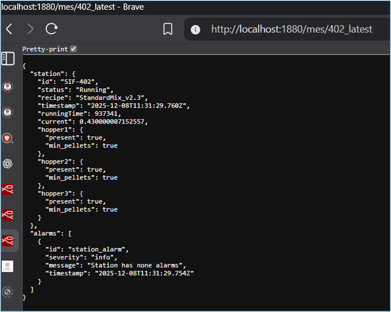
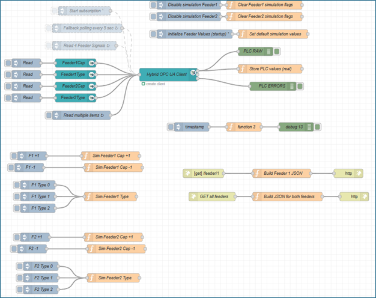
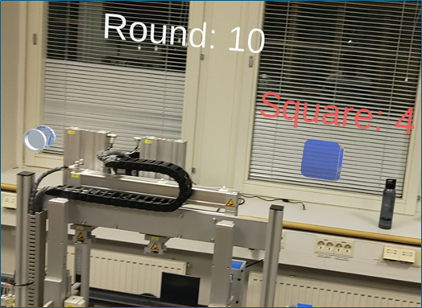

XR industrial data pipeline
Project context
This project demonstrates an end-to-end industrial data pipeline where live signals from Siemens PLCs are acquired, processed, and visualized in an extended reality application running on Microsoft HoloLens 2.
The work was developed as a team project within the HT2025 course. This page focuses on the overall system architecture and on my individual contributions to the industrial data pipeline enabling the XR application.
System overview
The implemented system consists of the following layers:
• Siemens PLCs providing operational and inventory data
• OPC UA for industrial communication
• Node-RED as an intermediate processing and API layer
• Unity as the application logic layer
• Microsoft HoloLens 2 as the visualization device
The architecture was designed to keep a clear separation between industrial systems and the XR application, enabling testing, simulation, and reuse.
My role in the pipeline
My responsibilities focused on the industrial and data engineering layers of the system:
• Level 1 connectivity validation
• OPC UA signal discovery and testing
• Node-RED flow design and implementation
• REST API design for Unity consumption
• Aggregation of station-level data
• Support during integration and XR deployment testing
Station-level data abstraction
A key design decision was to expose station-level APIs rather than raw signal-level endpoints.
For station SIF402, operational signals and hopper states were aggregated into a single JSON object.

Figure 15 – Node-RED flow aggregating operational and hopper data for station SIF402
The resulting API response exposed all relevant station information in a single request.

Figure 16 – REST API response containing aggregated station data for SIF402
This abstraction significantly simplified the XR application logic and reduced coupling between Unity and the PLC structure.
Multi-station support
The same architectural pattern was applied to additional stations.
For station SIF405, feeder-related data was extracted and exposed through a dedicated REST endpoint while reusing the same structural principles.

Figure 20 – Node-RED flow extracting feeder data for station SIF405, including simulation support
This validated that the pipeline could scale to multiple stations without redesign.
XR visualization and verification
Before connecting to live PLC data, simulated signals were used to verify the XR application behavior.

Figure 13 – Unity panel displaying simulated station data retrieved through the REST API
Once connectivity was validated, simulated signals were replaced with live PLC data.

Figure 17 – Unity application displaying live operational data from station SIF402
HoloLens 2 deployment results
The final system was deployed and tested on Microsoft HoloLens 2, visualizing live industrial data in an XR environment.

Figure 22 – HoloLens view showing live feeder counts for station SIF405
The application also supported simultaneous visualization of multiple stations.

Figure 24 – HoloLens view showing simultaneous visualization of SIF402 and SIF405
Outcome
The implemented XR industrial data pipeline demonstrated:
• Stable acquisition of live PLC data
• Clear separation between industrial and XR layers
• Station-level data abstraction suitable for XR
• Scalability to multiple stations
• Successful deployment and testing on HoloLens 2
This page captures the system-level perspective of the project, while detailed implementation aspects are documented in the corresponding technical pages.
Engineering challenges and lessons learned
• Exposing raw PLC signals directly to XR applications creates tight coupling and poor scalability
• Introducing a station-level abstraction simplified the XR logic and enabled multi-station support
• Simulation paths were necessary to decouple development from PLC availability
• Designing the pipeline with clear layer separation made it easier to extend the system to additional stations without redesign